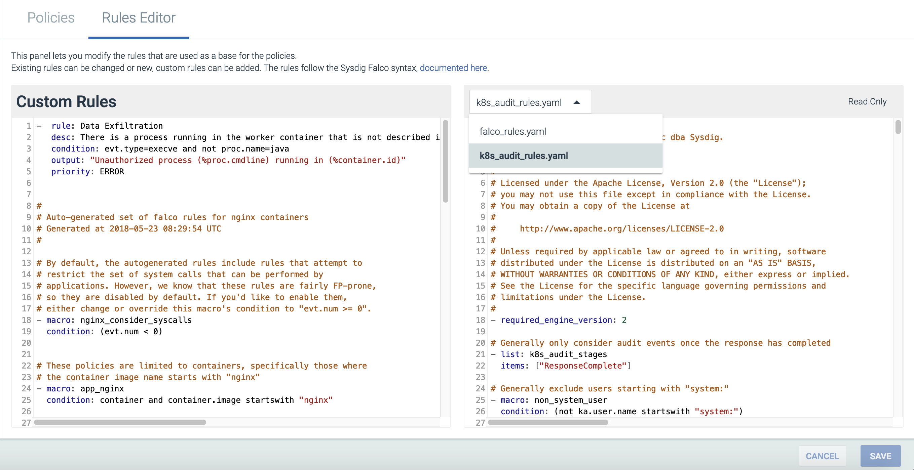

Kubernetes Audit Logging
Sysdig Secure allows users to create Falco security rules based on a stream of Kubernetes audit events, integrating Kubernetes audit logging with the Sysdig Agent. This allows users to track changes made to the cluster, including:
Creation and destruction of pods, services, deployments, daemonsets, etc.
Creating/updating/removing config maps or secrets
Attempts to subscribe to changes to any endpoint
Sysdig supports Kubernetes audit logging for the following distributions:
Minikube 0.33.1 and later, using the default Virtualbox driver
Kops 1.11.0 and later, using AWS
Note
Sysdig has tested and confirmed the Kubernetes audit logging processes for Minikube and Kops. Instructions for configuring audit logging for additional Kubernetes distributions will be added as those instructions are tested and verified.
Contents
Prerequisites
These instructions assume that the Sysdig Agent has already been deployed to the Kubernetes cluster. For detailed instructions, refer to the Agent Install documentation.
Enable Kubernetes Audit Logging
The steps to enable audit logging depend on the Kubernetes distribution being used:
Minikube
To enable audit logging:
Clone / download the repository:https://github.com/draios/sysdig-cloud-scripts.
Note
The repository contains the following relevant files:
k8s_audit_config/audit-policy.yamlNote
For more information on configuring the audit events passed to the agent, refer to the Kubernetes documentation.
k8s_audit_config/webhook-config.yaml.ink8s_audit_config/enable-k8s-audit.sh
Run the following command in the
sysdig-cloud-scripts/k8s_audit_configdirectory to enter the necessary values to thewebhook-config.yaml.infile:AGENT_SERVICE_CLUSTERIP=$(kubectl get service sysdig-agent -o=jsonpath={.spec.clusterIP}) envsubst < webhook-config.yaml.in > webhook-config.yamlRun the
enable-k8s.shscript to enable audit log support on the apiserver:bash ./enable-k8s-audit.sh minikube
Kops
To enable audit logging:
Clone / download the repository:https://github.com/draios/sysdig-cloud-scripts.
Note
The repository contains the following relevant files:
k8s_audit_config/audit-policy.yamlNote
For more information on configuring the audit events passed to the agent, refer to the Kubernetes documentation.
k8s_audit_config/webhook-config.yaml.ink8s_audit_config/enable-k8s-audit.sh
Run the following command in the
sysdig-cloud-scripts/k8s_audit_configdirectory to enter the necessary values to thewebhook-config.yaml.infile:AGENT_SERVICE_CLUSTERIP=$(kubectl get service sysdig-agent -o=jsonpath={.spec.clusterIP}) envsubst < webhook-config.yaml.in > webhook-config.yamlRun the
enable-k8s.shscript to enable audit log support on the apiserver:APISERVER_HOST=api.my-kops-cluster.com bash ./enable-k8s-audit.sh kops
Audit Logging Policies
Policies will need to be created to use the new Falco Rules for Kubernetes audit logging. For information on creating policies, refer to the Policies documentation.
View Audit Logging Rules
The Kubernetes audit logging rules can be viewed in the Sysdig Policies Rules Editor, found in the Policies module. To view the audit rules:
From the Policies module, navigate to the Rules Editor tab.
Open the drop-down menu for the default rules, and select
k8s_audit_rules.yaml:
View Audit Events
Kubernetes audit events will now be routed to the Sysdig Agent daemonset within the cluster. Once the policies are created, the audit events will be able to be observed via the Sysdig Secure Policy Events module.